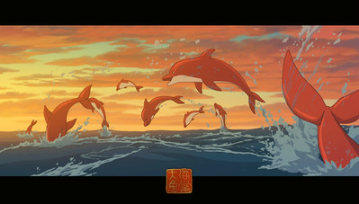
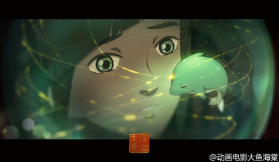
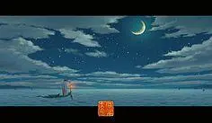
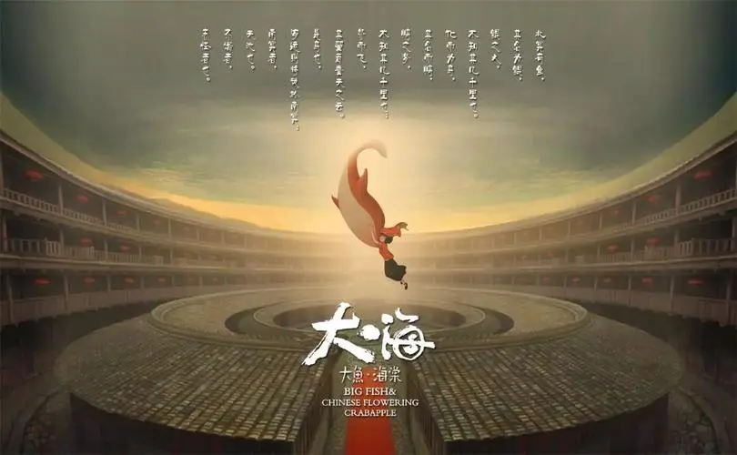
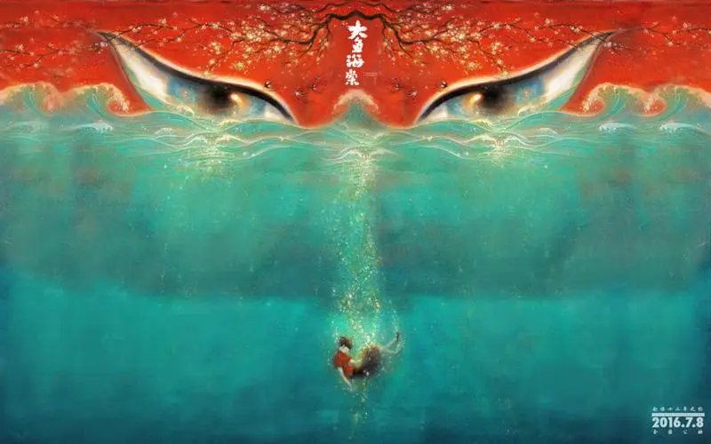
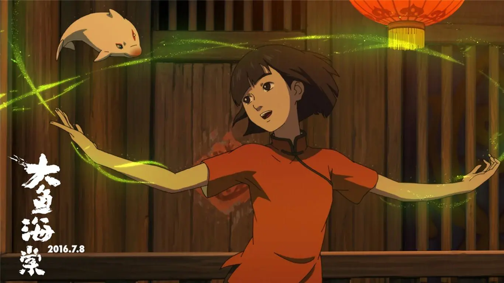

大鱼海棠
《大鱼海棠》是由彼岸天文化有限公司、北京光线影业有限公司、 霍尔果斯彩条屋影业有限公司联合出品，由梁旋、张春联合执导， 季冠霖、苏尚卿、许魏洲、金士杰、潘淑兰等参与配音的动画电影。 该片讲述了掌管海棠花生长的少女椿，为报恩而努力复活人类男孩 “鲲”的灵魂，成长为比鲸更巨大的鱼并回归大海，但这一过程却不 断地违背“神”的世界规律而引发种种灾难，彼此纠缠的命运斗争故事。该片于2016年7月8日在中国大陆上映。
图片鉴赏
  剧情介绍
所有活着的人类，都是海里一条巨大的鱼；出生的时候他们从海 的此岸出发。他们的生命就像横越大海，有时相遇，有时分开…… 死的时候，他们便到了岸，各去各的世界。四十五亿年前，这个 星球上，只有一片汪洋大海，和一群古老的大鱼。在与人类世界 平行的空间里，生活着一个规规矩矩、遵守秩序的族群，他们为 神工作，掌管世界万物运行规律，也掌管人类的灵魂。他们的天 空与人类世界的大海相连。他们既不是神，也不是人，他们是“其 他人”。十六岁生日那天，居住在“神之围楼”里的一个名叫“椿” 的女孩变作一条海豚到人间巡礼，结果被大海中的一张网困住， 一个人类男孩（许魏洲 配）因为救她而落入深海死去。为了报 恩而让人类男孩复活，她需要在自己的世界里，历经种种困难与 阻碍，帮助死后男孩的灵魂，成长为一条比鲸更巨大的鱼并回归 大海。但这一过程却历经种种困难与阻碍，与她青梅竹马的好友 “湫”则默默守护着她，不断地违背“神”的世界规律而引发种种灾难
  